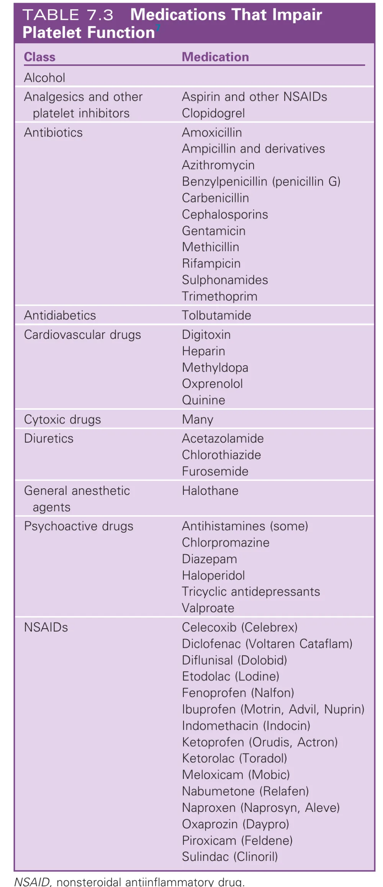
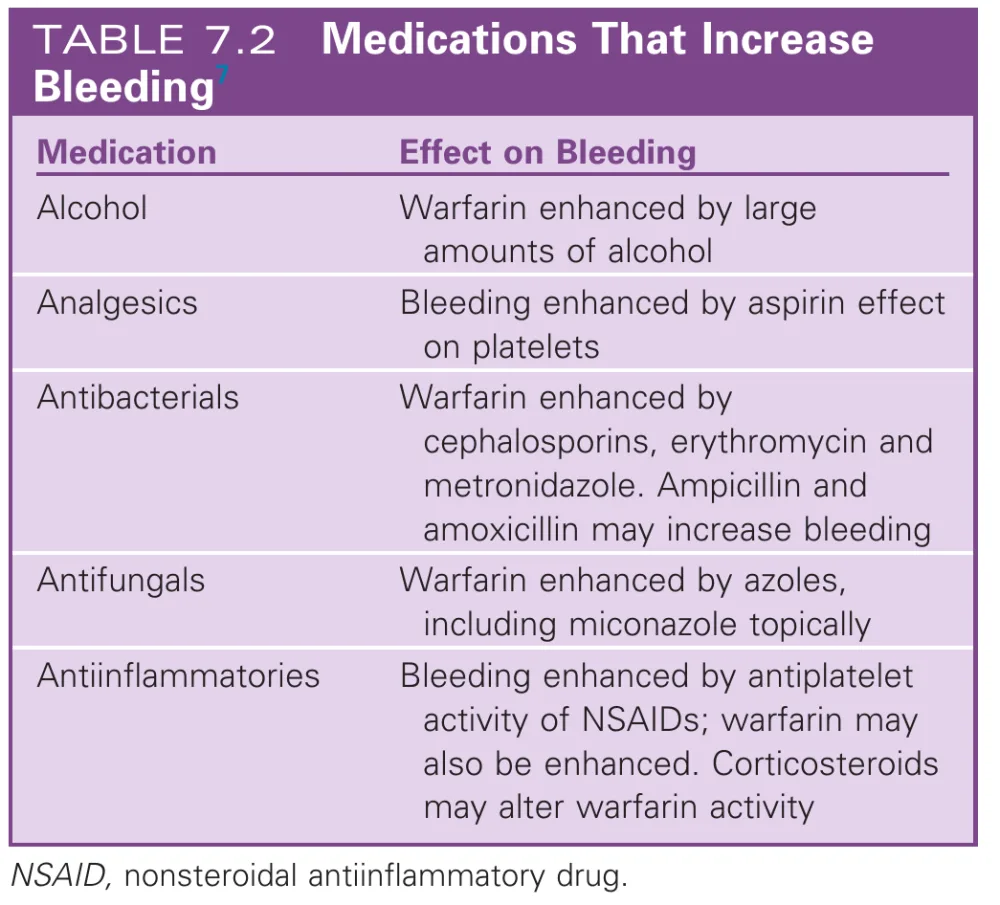

نسخه استخراجشده؛ ترجمه یا تأیید علمی انجام نشده است. وضعیت: captured
ارزیابی خطر خونریزی سه لایه دارد: هموستاز اولیه (پلاکت)، ثانویه (فاکتورهای انعقادی) و ثالثیه (فیبرینولیز). هر دارو در یکی از این لایهها اثر میکند.
INR — عدد و مرز تصمیم: در بیماران تحت ضدانعقاد، INR بالاتر است و معمولاً در محدودهی درمانی ۲٫۰ تا ۳٫۵ قرار میگیرد.
و مرز عملی: INR بالای ۳٫۰ باید کنترااندیکاسیون نسبی برای پروسیجر جراحی تلقی شود و مشاورهی پزشکی لازم دارد. INR بیمار وارفارینی را در ۴۸ ساعت پیش از جراحی بسنج، مگر مقادیرش پایدار باشد؛ و تا وقتی INR زیر ۳٫۰ است، وارفارین قطع نمیشود.
دقت کن که این نسبی است، نه مطلق — یعنی همان سنجش منافع در برابر خطرات که در یونیت پیش دیدی، اینجا با یک عدد مشخص فعال میشود.
شمارش پلاکت: مقدار طبیعی ۱۰۰٬۰۰۰ تا ۴۰۰٬۰۰۰ سلول در میلیمتر مکعب است؛ شمار کمتر از ۱۰۰٬۰۰۰ را ترومبوسیتوپنی مینامند که با خونریزی قابلتوجه حین و پس از عمل همراه است.
زمان خونریزی (Bleeding Time): روشی نسبتاً قدیمی برای تعیین عملکرد پلاکت است. یعنی نتیجهی آن را با احتیاط و در کنار بقیهی دادهها بخوان، نه بهعنوان معیار اصلی.
سه لایهی هموستاز و داروهایشان:
• هموستاز ثانویه — وارفارین، مهارکنندههای مستقیم ترومبین و هپارین.
• هموستاز ثالثیه — ترانگزامیک اسید که آن را مهار میکند (و دقیقاً به همین دلیل بهعنوان دارو برای کنترل خونریزی به کار میرود).
• هموستاز اولیه — عوامل ضدپلاکتی مانند آسپیرین و کلوپیدوگرل.
و یک نکتهی فارماکولوژیک که زمانبندی را تعیین میکند: آسپیرین و کلوپیدوگرل عملکرد پلاکت را برای تمام طول عمر پلاکت مختل میکنند — یعنی ۷ تا ۱۰ روز. پس «دیروز قطع کردم» عملاً بیمعناست.

یک توصیهی مهم، برخلاف تصور رایج:
«در بیشتر موارد، مهارکنندههای تجمع پلاکتی (مانند آسپیرین و کلوپیدوگرل) را قطع نکنید.» — البته بر پایهی توصیهی پزشک.
منطقش را با یونیت پیش کنار هم بگذار: خونریزی موضعی معمولاً قابل مدیریت است، ولی رخداد ترومبوآمبولیک ناشی از قطع دارو قابل جبران نیست. دو ریسک نامتقارن.
چرا پزشکان بهندرت اجازهی قطع میدهند؟ ترکیب آسپیرین و کلوپیدوگرل اثر افزایشی و احتمالاً همافزا دارد، چون دو مسیر مکمل در آبشار تجمع پلاکتی را میبندند — و بهندرت پزشکان اجازهی قطع کامل هر دو را میدهند، چون منافع محافظت قلبی بر احتمال اپیزودهای خونریزی در بیماران پرخطر قلبی-عروقی میچربد.
سازوکارها متفاوتاند: آسپیرین سیکلواکسیژناز را بهطور برگشتناپذیر استیله میکند و تولید ترومبوکسان A₂ را مهار میکند؛ کلوپیدوگرل بهطور انتخابی ADP را مهار میکند. نتیجهی هر دو یکی است: کاهش تجمع پلاکتی. و ساخت پلاکتهای تازه این اختلال را جبران میکند — در ۵۰ تا ۸۰ درصد موارد تجمع پلاکتی به حالت طبیعی برمیگردد.
و اینجا یک تمایز مهم که نباید با ضدپلاکتیها قاطی شود: NSAIDها اثر برگشتپذیر بر تجمع پلاکتی دارند و عملکرد پلاکت پس از پایان اثر دارو بازمیگردد. به همین دلیل پروسیجرهای جزئی جراحی ایمپلنت را میتوان با خیال آسوده و بدون تغییر دوز NSAID انجام داد.
پس دو حکم متفاوت برای دو دسته: ضدپلاکتی درمانی را قطع نکن (برگشتناپذیر و محافظ قلب)، و دوز NSAID را برای جراحی جزئی تغییر نده (برگشتپذیر). البته در انتخاب مسکن برای بیمار پرخطر خونریزی همچنان باید منافع را در برابر افزایش خطر سنجید؛ برای همین، در بیمار تحت ضدانعقاد، تجویز آسپیرین و NSAID بهعنوان مسکن پس از عمل را به حداقل برسان.
و یک هشدار دربارهی ضدانعقادهای جدید: این داروهای هدفمند مستقیماً به ترومبین متصل میشوند و تعامل آن با سوبستراهایش را میبندند. پاسخشان بسیار قابلپیشبینی است و آزمایش خون روتین را غیرضروری میکند — اما در حال حاضر هیچ عامل معکوسکننده یا پادزهری برای خنثی کردن اثرشان وجود ندارد، که میتواند در خونریزی کنترلنشده مسئلهساز شود.
تداخلهای دارویی که خونریزی را بدتر میکنند:
• آمپیسیلین و آموکسیسیلین ممکن است خونریزی را افزایش دهند.
• اثر وارفارین با آزولها — از جمله میکونازول موضعی — تقویت میشود. یعنی حتی یک ژل موضعی میتواند INR را جابهجا کند.
• خونریزی با فعالیت ضدپلاکتی NSAIDها تشدید میشود و اثر وارفارین هم ممکن است تقویت گردد.
• مترونیدازول نباید برای بیمار تحت درمان با وارفارین (کومادین) تجویز شود.
و برای کامل شدن فهرست: اثر وارفارین با سفالوسپورینها، اریترومایسین و مترونیدازول تقویت میشود، الکل به مقدار زیاد هم آن را تشدید میکند، و کورتیکواستروئیدها میتوانند فعالیت وارفارین را تغییر دهند.
این فهرست را جدی بگیر: بیشتر موارد بالا داروهایی هستند که خودت تجویز میکنی. یعنی خطر از نسخهی تو میآید، نه از پروندهی بیمار.
و مکملهای گیاهی — دو عددی که رفتار تو را باید عوض کند: مطالعات نشان دادهاند تا ۷۰ درصد بیماران افشا نمیکنند که مکمل گیاهی مصرف میکنند، و ۴۰ درصد ظرف ۲ هفته پیش از جراحی مکمل گیاهی مصرف خواهند کرد.
دلیلش هم روشن است: بسیاری از بیماران چون دارویی «طبیعی» نامیده میشود آن را ایمن میپندارند، در حالی که اکثر مکملها هیچ پژوهشی دربارهی ایمنی و اثربخشیشان ندارند. مکملهای مؤثر بر هموستاز باید دستکم ۲ هفته پیش از جراحی کنار گذاشته شوند.
و یک آنتیبیوتیک رایج — پنیسیلین V: این دارو باکتریسیدال است، جذب خوبی دارد، ظرف ۳۰ دقیقه پس از تجویز به اوج سطح سرمی میرسد و تا ۴ ساعت سطح خونی قابلتشخیص دارد. قاعدهی کلی پیشگیری هم این است که دوز پیش از عمل دستکم یک ساعت پیش از جراحی داده شود تا هنگام برش غلظت بافتی کافی باشد؛ یعنی زمان دادن دوز بهاندازهی خودِ دوز مهم است.
